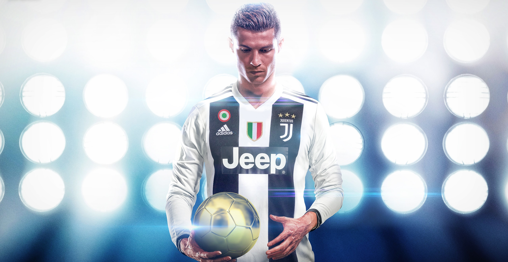

Mанчестер Юнайтед

Роналду дебютував за «Манчестер Юнайтед», вийшовши на заміну в матчі проти «Болтон Вондерерз».
Довіру Фергюсона він виправдав у першому ж сезоні, за результатами якого отримав Приз сера Метта Басбі
найкращому гравцеві сезону 2003/2004 (Sir Matt Busby Player of the Year).
Премія, яку присуджують за підсумками голосування уболівальників «Манчестер Юнайтед»,
стала першою особистою нагородою в професійній кар'єрі футболіста[10].
Реал Мадрид

«Реал Мадрид» і «Манчестер Юнайтед»
26 червня 2009 підписали угоду про перехід півзахисника
в іспанський клуб[14].
В рамках контракту Роналду проведе в «Реалі» шість сезонів, а його
зарплата складатиме 13 мільйонів євро в рік,
це рекордна для футболу сума — до того найвисокооплачуванішим
футболістом світу
був форвард «Інтеру» Златан Ібрагімович, що отримував 12 мільйонів євро.
Ювентус

10 липня 2018 року було офіційно оголошено про перехід 33-річного португальця
до складу
італійського «Ювентуса», з яким уклали 4-річний контракт.
Трансферна сума склала 1
00 мільйонів євро, що стало рекордом для гравців старше 30 років та
найдорожчим
придбанням в історії італійських клубів.
16 вересня 2018 забив
перші голи за «Ювентус» в Серії А[71][72]. 19 вересня вперше
зіграв за клуб у групі Ліги Чемпіонів у гостях проти «Валенсії»,
отримавши на 29-й хвилині
червону картку від
арбітра з Німеччини Фелікса Бриха, першу за весь час виступів
у турнірі[73], на думку португальця — несправедливу[74].